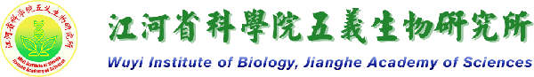
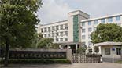

 |  | |
所务公告 研究动态和学术活动 招聘信息 网站管理员：唐振钧 |
新闻快讯→| >>网络费查询 | >>设本站为首页
|


| 请在800x600分辨率下，用IE 4.0以上版本浏览器观看本网站 |
| 版权所有:江河省科学院五义生物研究所 ©2001 Wuyi Institute of Biology, Jianghe Academy of Sciences |
| 网站信箱:webmaster@wyib.ac.cn | 联系电话：(0582)7361026 | 地址:江河省五义市义城区北郊科学路8号 946200 |
| 本网站为虚构故事互动作品，页面所涉机构、人物、报刊与文献均为虚构内容，请勿作为现实资料使用 |